On-device embodied AIResearch preview · 2027
PicoVISTA
Small policy.
Selective reasoning.
Robust robot manipulation on resource-constrained hardware—without running a foundation VLA at every control step.
Propose
Predict
Intervene
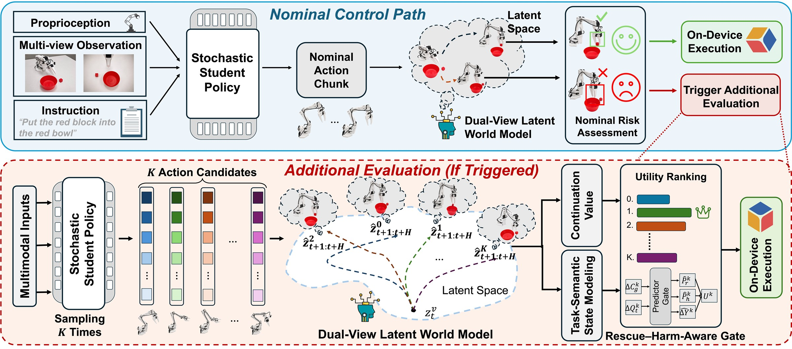
Fig. 1 Routine actions stay on the fast path. Only risky decisions trigger counterfactual evaluation.
01 / Motivation
Stop paying the
generality tax.
Foundation VLAs are built for an open world, but deployed robots repeatedly visit a much smaller local world. PicoVISTA turns that mismatch into an opportunity: preserve deployment-relevant capability in a tiny Student, then recover robustness only when the nominal decision looks unsafe.
Foundation TeacherGeneralist
3.62B
parameters evaluated for broad visual-language-action capability.
Full capability · full cost · every decisionPicoVISTASpecialist
78M
parameters for fast local control plus selective predictive reasoning.
Routine fast path · reasoning on demand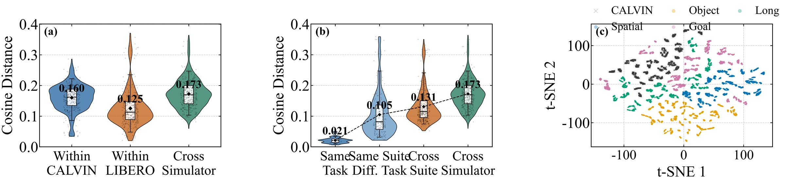
02 / Method
Distill the routine.
Reason on demand.
PicoVISTA combines future-aware policy distillation, dual-view latent prediction, and a rescue–harm-aware gate. The system spends extra compute only when a different action is predicted to change the outcome.
Compress
Transfer control-relevant representations, actions, and future consequences into a compact stochastic Student.
Imagine
Roll out nominal and alternative action chunks in a dual-view latent world model—no pixel reconstruction required.
Intervene
Balance short-term semantic progress with long-term continuation value, replacing the action only when helpful and safe.
Future-aware distillation
Three stages, one deployable policy.
Representation and action distillation initialize the Student. On-policy refinement then corrects states that the Student actually visits and aligns the predicted consequences of Student and Teacher actions.
- 1Control-relevant representation transfer
- 2Stochastic action behavior transfer
- 3On-policy, world-model-aligned refinement
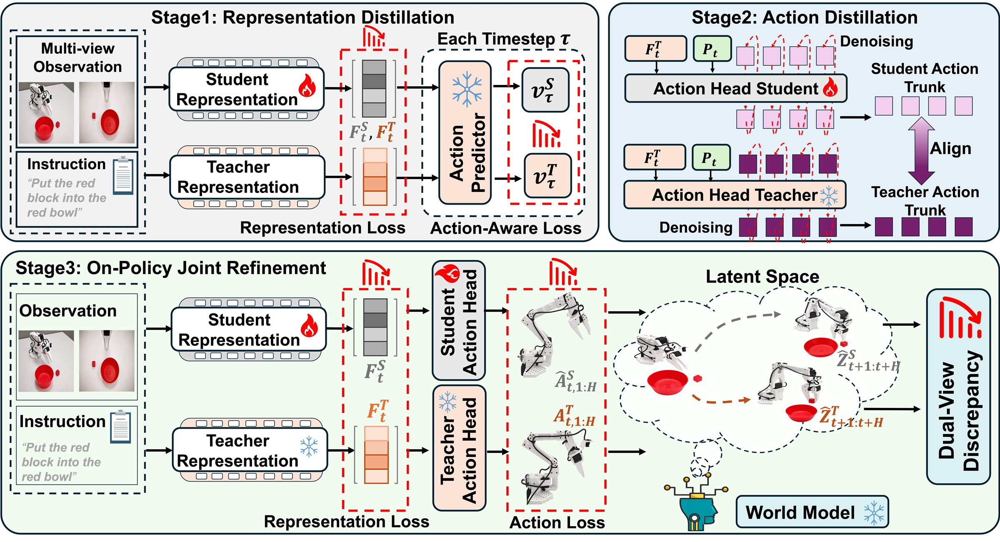
Dual-view latent world model
See the scene—and the contact.
The agent view preserves global context while the wrist view captures local, contact-sensitive detail. Shared action-conditioned dynamics predict compact latent futures for each candidate.
Agent view · global context
Wrist view · local contact
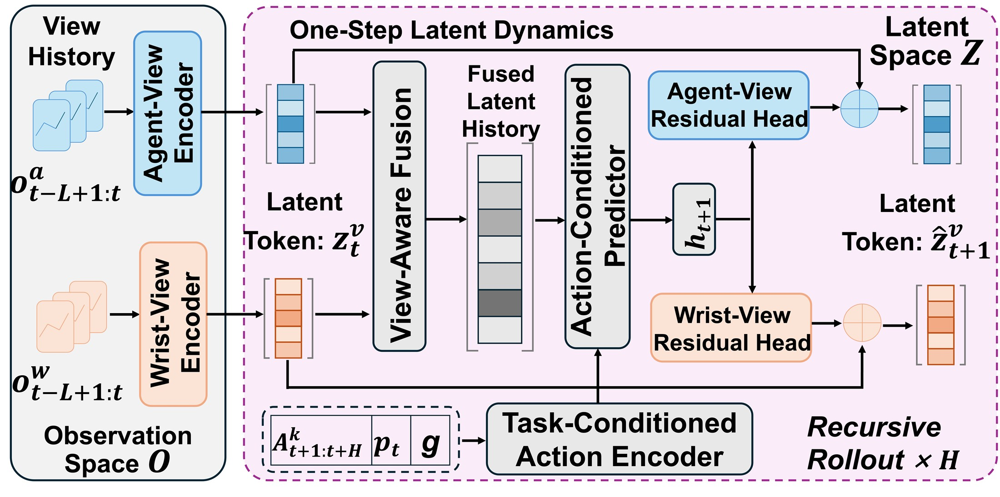
03 / Evidence
Small footprint.
Near-Teacher success.
Evaluated across three simulation benchmarks, five mobile and edge platforms, and eight physical single- and bimanual tasks.
LIBERO · 40 tasks
96.4%Average success, within 0.5 percentage points of the 3.62B-parameter Teacher.
Spatial98.4%
Object99.2%
Goal94.6%
Long93.2%
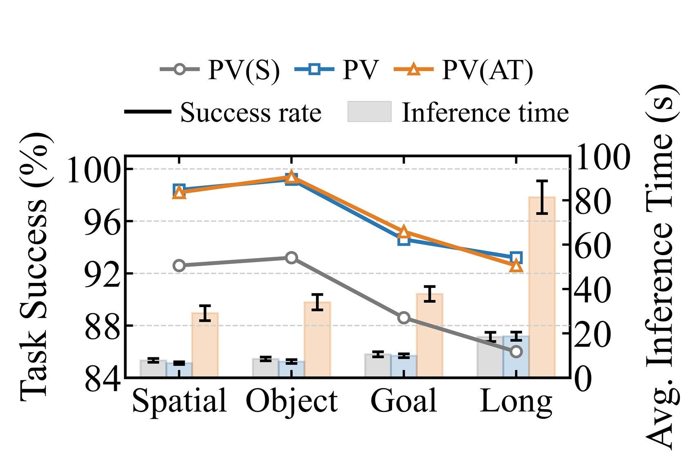
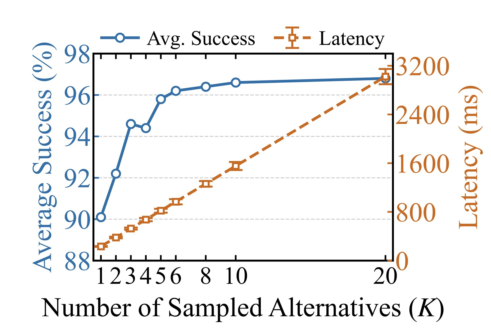
SO-ARM101 · single + bimanual
89.8%Average success across eight physical tasks; every task remains at or above 87%.
91.3%single-arm average
88.3%bimanual average
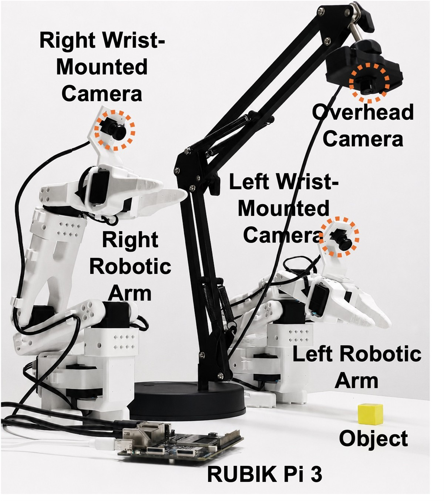
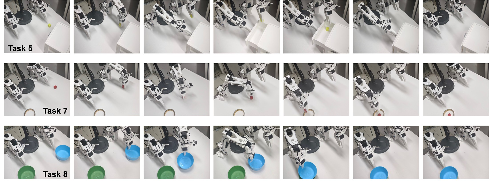
Qualcomm AI Engine Direct
Everything runs locally.
Candidate generation, latent rollout, action evaluation, gating, and receding-horizon control execute without cloud inference.
Primary platform
Rubik Pi 3
Qualcomm QCS6490 SoC
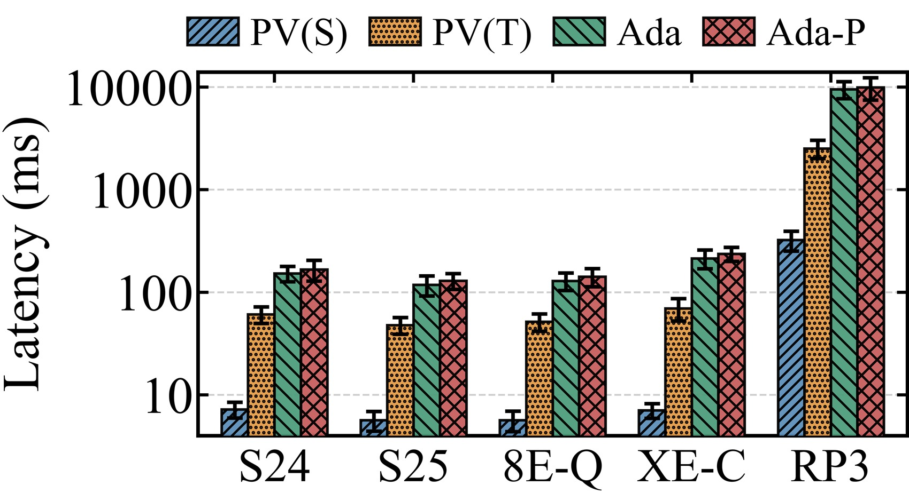
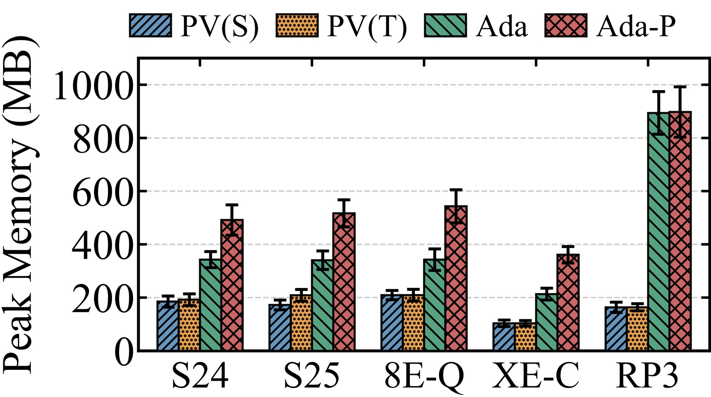
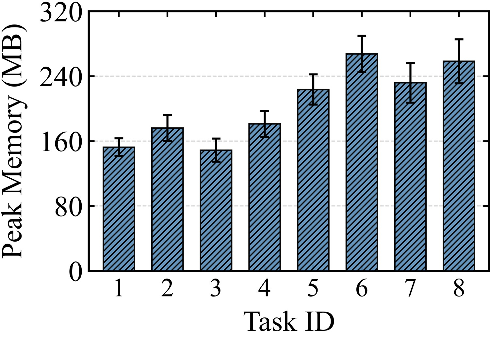
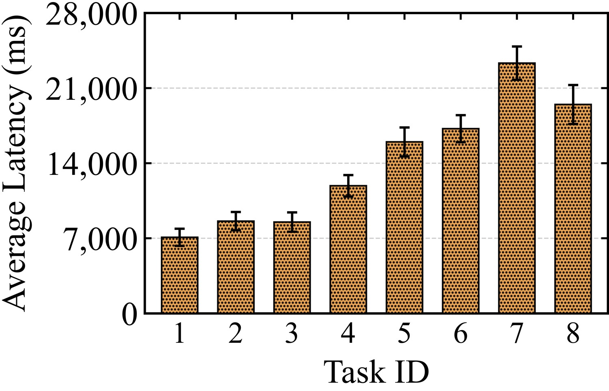
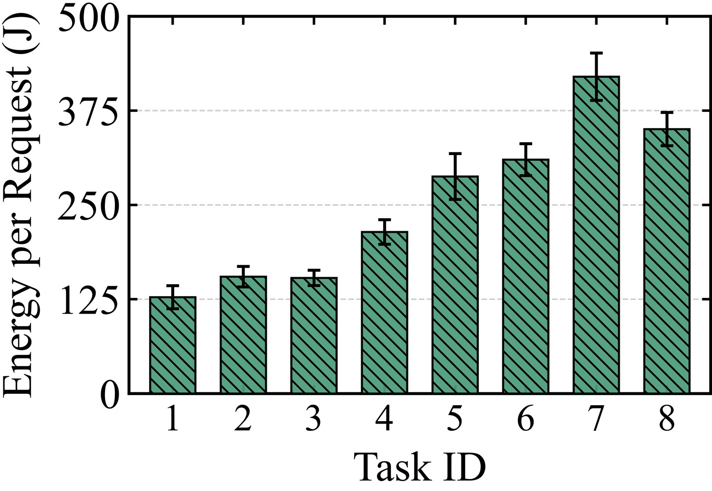
04 / Takeaway
Practical embodied systems need not choose between an expensive generalist and a brittle specialist.
Make specialization the common path—and reserve predictive reasoning for the decisions where it changes the outcome.
Back to top ↑Citation
Anonymized for review.
Author and venue metadata will be updated after the double-blind review period.
@article{anonymous2027picovista,
title = {PicoVISTA: Small Policy, Selective Reasoning
for Robust On-Device Robot Manipulation},
author = {Anonymous Authors},
year = {2027}
}